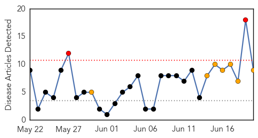
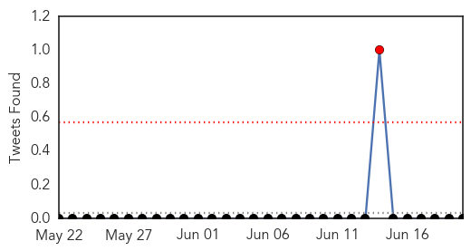
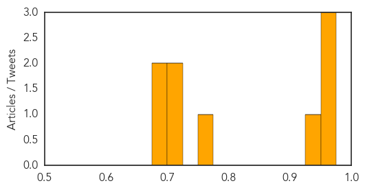

Dengue Fever
30-Day Web Trend
2 alerts, 7 warnings

30-Day Twitter Trend
1 alerts, 0 warnings

Article Locations

Article Confidences
Top Articles:
- 0.973
- Dengue fever claims another life in the city
- 0.973
- Yemen conflict: WHO and partners strive to prevent collapse of Yemen’s health system
- 0.964
- Yemen crisis: War has led to health crisis, including dengue fever
- 0.948
- Woman dies of dengue in Puttur, another case suspected in Belthangady
- 0.768
- Yemen Crisis: UN issues fresh aid appeal as 3,000 cases of dengue fever confirmed
- 0.719
- Sheikhupura’s tehsil Ferozewala declared sensitive for dengue
- 0.714
- Dengue surveillance ordered in Ferozewala
- 0.693
- UN sounds warning on Yemen situation
- 0.687
- UN sounds warning on Yemen situation
Top Tweets:
-
No tweets found for Jun 20, 2015
Hepatitis
30-Day Web Trend
0 alerts, 0 warnings
30-Day Twitter Trend
0 alerts, 0 warnings

Article Locations

Article Confidences

Top Articles:
-
No articles found for Jun 20, 2015
Top Tweets:
-
No tweets found for Jun 20, 2015